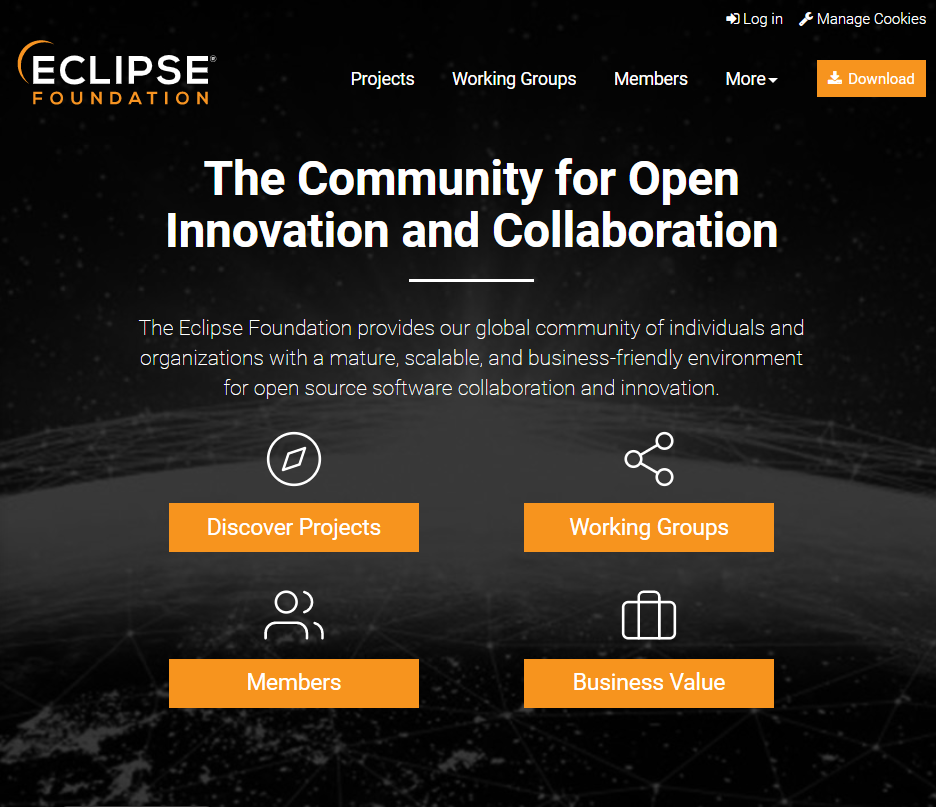

2.2.- Eclipse.
Eclipse es mucho más que un entorno de desarrollo integrado. Eclipse podría definirse como una plataforma de desarrollo software que dispone de Entornos de desarrollo integrados para algunos de los lenguajes de programación más utilizados, como Java, PHP y C++, así como una increíble comunidad de desarrolladores que respalda al proyecto.
Los distintos entornos de desarrollo que ofrece el proyecto Eclipse son de código abierto, gratuitos y multiplataforma. A pesar de su gratuidad, podemos colaborar en la financiación del proyecto eclipse.
Desde la página oficial del proyecto podemos descargar los distintos IDEs que proporciona la comunidad, además podemos formar parte de la comunidad Eclipse y participar, o simplemente conocer, en los distintos proyectos software de eclipse.

Reflexiona
Los entornos de desarrollo son herramientas muy útiles a la hora de llevar a cabo nuestros proyectos software. Comunidades como la que apoya al proyecto eclipse, mantiene herramientas tan útiles como el IDE Eclipse, que pueden ser descargadas de forma gratuita a través de su web oficial. ¿Cómo se mantienen dichos proyectos? ¿Cómo podemos colaborar? ¿Qué ventajas tienen los proyectos OpenSource y como podemos colaborar con ellos?
Una vez hemos accedido a la página, si nos vamos a la sección de Descargas (Download) podemos descargarnos las distintos entornos de desarrollo integrados que ofrece el proyecto eclipse.

Dentro de las funciones básicas que ofrece Eclipse podemos encontrar:
- Creación de nuevos proyectos. Requieren de un workspace para poder desarrollar. En netbeans se estructuran en proyectos que al final son directorios.
- Admite etiquetado resaltado y autocompletado.
- Permite la importación/exportación de proyectos.
- Funciona con proyectos Android, aunque se haya en desuso.
- Su potencialidad viene dada por los plugins. Además actualmente se instala de forma segmentada por lenguajes lo que lo hace mas ligero.
- Admite acciones de puntos de ruptura y de refactorización.
- Contiene un sistema de depuración de proyectos.
- Aunque Netbeans tambien permite el desarrollo de aplicaciones Web, Eclipse es mas usado para este tipo de proyectos.
- Posee detección de errores en tiempo real.
- Dispone de la opción de actualización automática desde el menú "Ayuda".
- A partir del proyecto Babel, permite la traducción a 47 idiomas diferentes.
- Admite la generación de código Javadoc.
- Soporta JUnit.
Autoevaluación
Seleccione la opción correcta
Retroalimentación
Falso
Eclipse es mucho más que un entorno de desarrollo integrado para el lenguaje de programación Java. El proyecto eclipse incluye entornos de desarrollo para múltiples lenguajes, como PHP, Java, C/C++ o JavaScript entre otros. Por otra parte, eclipse, además de los distintos IDE que soporta, es una gran comunidad de desarrollo software.